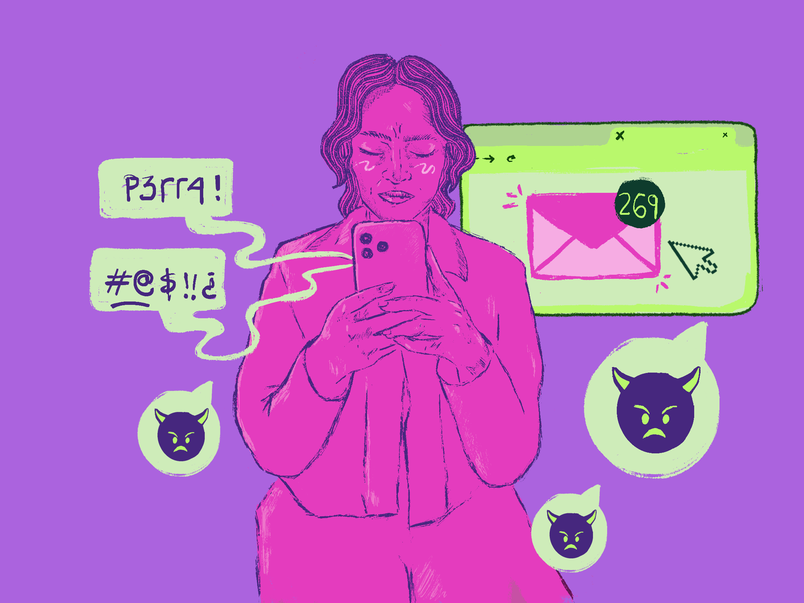
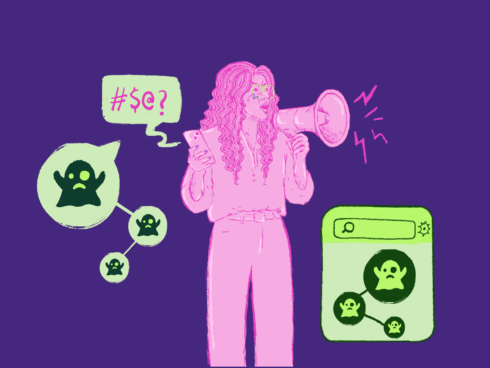
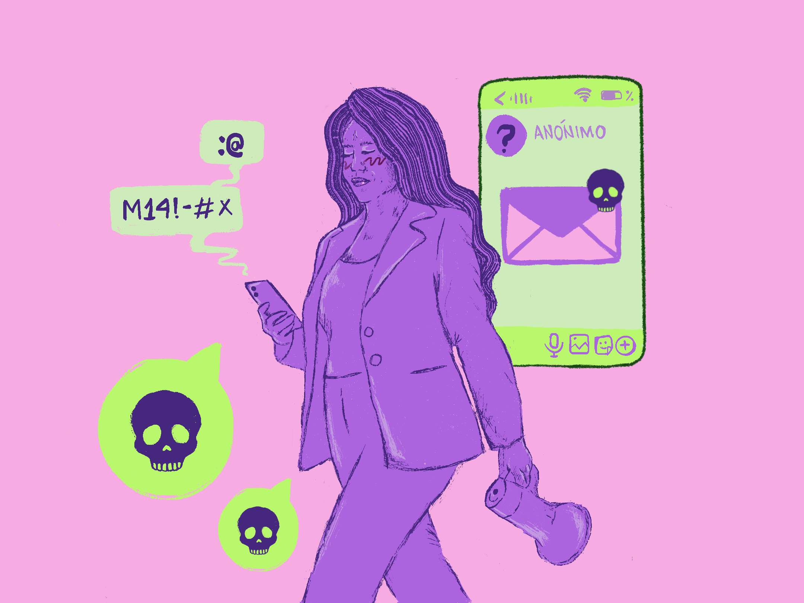

Candidatas
bajo ciberataque
La investigación
La violencia política contra las mujeres también se libra en las redes sociales. Rumbo al Congreso, candidatas de Bogotá, Antioquia y Cauca fueron blanco de ataques sexualizantes, discursos misóginos y amenazas digitales. Esta alianza investigativa, integrada por ColombiaCheck, Vorágine y Voces Francas, identificó al menos 790 publicaciones en X y 2.900 comentarios en Instagram y Facebook dirigidos a expulsarlas del espacio público y a deslegitimar su participación política por razones de género.
-
790
publicaciones
analizadas en X -
2.900
comentarios en
Instagram y Facebook -
+50%
son ataques por
razón de género
Los casos de Laura Beltrán —conocida como Lalis—, congresista electa por el Pacto Histórico atacada por su apariencia física; Catherine Juvinao, representante por la Alianza Verde, objeto de agresiones sexualizantes; y Camila Ospina, excandidata por el partido Creemos, amenazada de secuestro, demuestran que la violencia digital no distingue partido ni ideología política.
Más de la mitad de las publicaciones analizadas corresponden a ataques por razón de género. En la mayoría de los casos, el debate sobre las candidatas se desplaza hacia sus cuerpos: convertidos en objeto de deseo sexual o de burla, con el propósito de generar un ambiente hostil que desaliente a las mujeres de participar en política.
Esta investigación tomó como punto de partida el trabajo previo de la Fundación Karisma, que identificó las palabras clave con las que suelen atacarse a las candidatas en el país y estableció las categorías de análisis de violencias de género utilizadas aquí. A partir de ello, la alianza desenredó el ecosistema del ataque: identificó a los usuarios más activos en las agresiones y rastreó cómo estas se amplifican a través de cuentas de propaganda política, perfiles que disfrazan la violencia con humor e incluso encontró cuentas desinformadoras reincidentes que recurren a los ataques sexualizantes.
Al cierre de este reportaje, Meta y X no habían respondido las consultas realizadas para esta investigación sobre sus políticas de moderación frente a este tipo de contenidos, pese a que Colombia cuenta desde el 2 de abril de 2025 con la Ley 2453 de Violencia Política contra las Mujeres, que reconoce expresamente la violencia digital como una de sus manifestaciones.
Lee la investigación

Campañas bajo ataque digital
Camino al Congreso, candidatas de tres regiones fueron blanco de miles de mensajes violentos, misóginos y sexuales contra su participación política por razón de género.
Leer entrada
Ecosistemas del ataque: quiénes están detrás
Anonimato, comportamiento atípicos, violencias disfrazadas de humor y desinformación sexualizante caracterizan ataques digitales a tres candidatas, según análisis de esta alianza investigativa.
Leer entrada
Amenazas y acoso al privado
Amenazas y acoso en mensajes privados revelan la cara más invisible de estos ataques digitales. Colombia reconoce el fenómeno, pero sin sanciones específicas.
Leer entradaCréditos
Equipo editorial
- Edición general
- José Felipe Sarmiento (Colombia Check)
- Investigación y redacción
- Omarela Depablos Padrino · Valeria Urán Sierra · Lauren Franco Guerrero · Angie Ramírez Meneses
- Asesoría editorial
- María Teresa Ronderos · José Luis Peñaredonda
- Identidad gráfica
- Omarela Depablos
- Revisión legal
- Fundación para la Libertad de Prensa (FLIP) — para “Ecosistema del ataque: quiénes y cómo impulsan la violencia política contra las mujeres”.
- Desarrollo web
- Geniorama